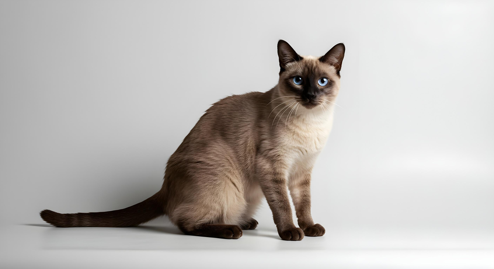

by smei

about cats
cats are highly adaptable animals with a unique combination of independence and social behavior. unlike many other domesticated animals, they can thrive both indoors and outdoors, and they communicate through a mix of vocalizations, body language, and scent marking. a cat’s whiskers, for example, are extremely sensitive and help them navigate tight spaces and detect subtle changes in their environment.
they also have a strong instinct for routine and territory. even small changes—like moving furniture—can affect their comfort.